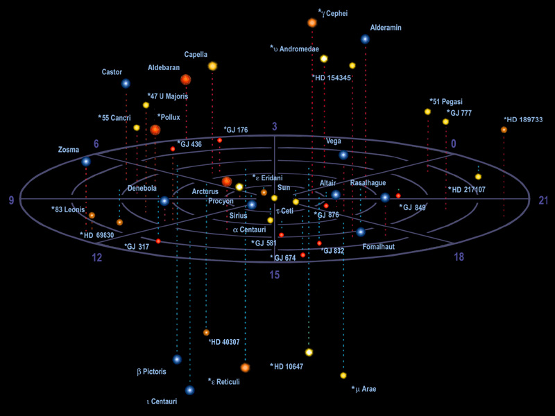

Yesterday was Thanksgiving, and so I wanted to celebrate somewhat. You know turkey is rather difficult to come by in China, so I decided to go and get some chicken. I had my mind on a big family bucket of chicken at KFC. I had been thinking about it all day. Then at the last minute around 7pm, the wife says, “KFC is too far away, and I don’t feel like going out. Let’s go to the local restaurant outside our place and get some chicken there.”
Now, I had a bad feeling about it. I kept on imagining some of the worst chicken meals that I had in China, but I shrugged my shoulders and “went with the flow”. I did this, even realizing…
“…I have a bad feeling about this…”
It was horrible.
Steamed chicken. Nice thick globs of yellow fat (the size of your thumb) on bloody red chicken meat. Skin a yellow-white thick layer of fat. I ate a few bites and left the chicken sit there.
Even my Chinese wife, who is used to these kinds of “dishes” was aghast. She wouldn’t touch it either. The other dishes were a mistake as well. We ordered ten scallops, but they made oysters instead, so I ate ten oysters, some rice and wilted vegetables for Thanksgiving dinner.
It was pathetic.
I went home subdued. Didn’t say much. Put the kid to bed, and turned in.
The misses, knows that it was terrible, and tried to make up for it by making me a nice cup of coffee today this morning. It’s one of those unspoken things that people in a relationship do with each other when words cannot suffice.
The bitter memory of such a horrible event will stick to my mind for years now, and we will never… and I do mean NEVER… go back to that pathetic restaurant ever again.
Why did I want to eat chicken (as a substitute for turkey) on this particular day?
Well, because it is an American holiday of friendship, and sharing. And today, like the nation it represents, are a horrible distortion of what it used to be. I don’t think that I will ever celebrate the Thanksgiving holiday ever again, it is crossed out and erased from my calendars.
Blech!
Given what I know now, in America, Thanksgiving and “Black Friday” will turn into grand distortions of what they used to be.
Much like that horrible, bloody, greasy, fat laden piece of “road-kill” that I endured for dinner.
Ok. I hope that your holiday is much better than mine was.
Here we continue with periodic questions that I ask the Domain Commander for clarification on. This group of questions took place in November 2021. It consists of various questions that influencers asked, and that we asked over time. I compiled the questions and then submitted to the Commander via my EBP for answers.
Tell me more about the rest of the prison complex
This is a question that I want to ask. So I placed it up front here.
I have long understood that our solar system is but one system in a constellation of five (give or take) other solar systems that combined form (what I refer to as) a “sentience nursery”. Most discussions on the “Prison Planet” concept revolve around the idea that since we are earth humans that we should only be concerned about our planet and not the entire prison system.
So I went and grabbed a 52º “white wine” and started a typing. (Alcohol has no effect on the comm channel. I use it because it mitigates the bad effects of the biological impacts during the chat.)
Time is 23:48 Saturday night. My daughter is finally asleep.
[1] Is the “Prison Complex” like that of the ADC (spread out), or a cluster in one large geographic area?
The prison complex is a set geographical area with this region of space. It is unlike the ADC with had prisons spread out throughout the state. This geographical region, in it's entirety is enveloped in a "bubble" field or interdimensional / universe /containment field / mechanism. This bubble contains five plus one solar systems. Thus there are six solar systems that contain prison environments. One of them is "your" solar system. The five others are geographically located within close proximity of your solar system, and all lie within an ellipsoid of which your solar system is part of. Your solar system is not at the center of the ellipsoid containment area. It is actually off to one of the extreme edges of the containment field. Within this containment field are also some other solar systems that are "empty" / devoid of active prison utility. Any lives, creatures or inhabitants on those planets are not part of the prison skin-suit system. The ellipsoid containment field is at an angle to the galactic plane, and is tilted to fit the requisite solarsystems involved.

The Alpha Centauri solar system is also part of the prison complex.
[2] Are all the other solar systems in the same state as the earth prison complex?
I asked this question, not realizing just how broad based it was. I was reprimanded for the generalities involved. Never the less here’s the answer.
This is a general question statement. So a general overview is in order as the answer. All of the solar systems are administered as one single entity from one unified central complex. Each one has it's own administrative center. For the earth solar system, the administrative center is in the earth's moon. The main prison complex administration center (for the entire multi-system complex) was destroyed by The Domain, roughly 1200 (earth) years ago. When that happened, administrative control reverted to the individual solar system administrative centers. Each one handled the situation differently. The solar systems act as puzzle pieces or cells to the unified whole. This is true for the "tunnel of light" to go to the "Heavens", the containment fields, and the mini-pocket universes that are all involved in the individual solar systems. Each solar system has their own unique and independently maintained and controlled systems. They work together as a whole. If the containment field near the earth solar system were to be destroyed and effectively shut down, the containment field of the nearest other prison solar system would expand to take over and compensate for the loss. Thus the entire system is a maze of complexities and self-repairing actions. All of the solar systems, and their planets within the prison complex are still operational in one form or the other. All are now operating under the local control of The Domain, and all are being unraveled / untangled / investigated so that the entire system can be under full Domain control for the eventual shut down of the field and the rehabilitation of the inmates entrapped inside. The inmates occupy different (species) skin-suits depending on the planetary environments involved, and thus the individual physical situations vary substantially from planet to planet.
[3] Are there any lost members of the Domain in other solar systems of the prison complex?
Yes. The largest lost contingent is associated with the earth, but there are some smaller groups or individuals who are lost in other planets of the prison complex. We know where all of them are and we are tracking them (as best we can) given the current restrictions on our capabilities at this time. For The Domain, geographic location is not the kind of problem that it is for human physical skin-suits. To us, the location is all in the same consciousness area, while for you it seems like they are scattered all over the galaxy. The earth lost a military garrison. While the XXXXXX lost a scientific research base, and YYYYY lost a number of vehicles and crafts including their crews. There are also a few individual IS-BE's that got caught in the field that are in need of rescue.
[4] Do the other solar systems have human skin-suits and other similar animal forms for inmates?
No. The other solar systems do not use human skin-suits. The inmates occupy other (some are humanoid) forms. The remaining administrators, of course maintain their "old empire" forms and they are imprisoned within their command and administrative bunkers under our control. Mades Escapleon was the administrator for your solar system, and is (as you know) an inmate within the general population. You are the only one that escaped in such a manner. The rest fled the prison complex completely and disappeared in or outside of the "old Empire". We have not been able to find any of them and their whereabouts are unknown. You are our only viable tie to the administration aspects of the prison complex. And unfortunately, your human prison skin-suit has the many inherent retardation's making memory access and utility very difficult.
[5] Are the heaven(s) that exist in these other solar systems the same as the heaven(s) that are accessible from our solar system?
Heavens are species dependent. Where there are same species on different planets within the Prison Complex, they will share the same "Heaven" pocket-universe. All of the "Heavens" utilize a "tunnel of light" for memory erasure and reprogramming. The "Heavens" are unique to the prison complex, and do not actually exist in the Master Universe as inmates would understand. The IS-BE's that live and operate outside of the prison complex live and die in a completely different state of understanding and reality that is far beyond anything that inmate humans can understand. The "Heavens" that exist within the Master Universe are simply a part of the Master Universe mechanics / mechanism /architecture. It is a different state within the same confines. In the Prison Complex, "Heavens" provide an opportunity for the IS-BE to rest and learn from it's experiences in the physical realm. This is not necessary in the Master Universe. Thus, the only "Heavens" that exist are those associated with the Prison Complex. From our point of view, "Heavens" are sub-pocket universes that are specific constructions for specific purposes and utility.
[6] Are there mantids in other planets of the prison complex?
There are other species that perform the same role as the Mantids do in the earth prison enclave. It should not be a concern to inmate human archetype skin-suits. All of these other species were designed and bread for that specific role, and all follow the basic template of being a caretaker for another species. In every instance, they assist the consciousness to endure hardship and then reward them with a stint in "Heaven".
[7] Does you; “our”, Domain Commander liaison work with the rest of the prison complex, or is specifically assigned to our solar system alone?
I am in charge of the entire geographic region that includes the Prison Complex of multiple star systems. I have multiple projects and roles proceeding throughout this region. The resolution of the Prison Complex issue and the recovery of the lost battalion are issues that are prioritized as significant and have abbreviated windows of opportunity for resolution.
A Question – Was I altered?
From a MM influencer who asked…
Hope you are well! I hesitated about writing this report because I can't remember the most crucial part of the dream-- the mission itself. But this dream also brought up a recurring question I've had for the Domain and our roles as volunteers in the war against imprisonment. I'm still in my break from my intention campaign but have been recently learning (relearning?) how to meditate and reawakening my lucid dreaming and precognitive abilities. So occasionally when I'm falling asleep, especially if I'm dead tired, I'll have disturbing "mini-nightmares" that I'll wake myself from, but that will keep occurring each time I try to sleep unless I physically switch position. These little dreams will be of grotesque images, snapshots of bad things happening to friends or family; basically anything that will bug me, and it's almost like something's being sadistic and messing with me because it's hard enough to get comfortable with my chronic back pain. Last night my position was so comfortable and I was so tired that when I woke myself from the 3rd mini-nightmare (each only lasting a few minutes), I was like screw it; I'm donning the armor I used to use to battle the demon in my sleep paralysis and I'm taking these nightmares dead on because I need to sleep and I'm not changing positions. So mentally I donned my Armor of Love (a gift from my Guardian Angel/Mantid, whatever), and my Sword of Truth and I visualize charging off on my horse even as the tingling in my arms and legs signals the transition into sleep paralysis. Now my transitions into lucid dreaming are generally quick and seamless--I don't have any sense of contracting into the pineal gland or anything else; it's more like moving through different veils. Anyways it takes me mere seconds to slay the little pesky scamp that's been messing with me, and then here I am in the dream landscape, lucid and aware that I can do whatever I want in the dream creation, which hasn't happened in years. So naturally I decide to go flying, because it's also been years since I did that. Flying in dreams can be funny sometimes because it seems like something there are certain rules you have to follow to gain altitude or control movements, such as making swimming motions or focusing really hard. This time it was easy to take off to a comfortable altitude where I could see the landscape, but I had this little string tethering me to the earth like a balloon. I decided to just accept it as something like an Astral tether, and as soon as I did that it went away. Then I was able to concentrate on the land below me-- it wasn't local because everything was green (and I live in the desert). It looked like China or Japan, with rice paddies and low forested foothills. Now here I began to move from more lucid and aware to less lucid, so when I awoke the details became less clear. In the dream I mentally heard someone calling for me, and it was someone I knew but hadn't connected with for years. I flew down into a little house, thinking I know this entire family; I've helped them before. I was trying to remember their names and was having difficulty, which bugged me. I spoke with a middle-aged man, and I want to say his name was Mr. Miyomi--Japanese. He told me that my last mission where I'd taken out a sentry was incomplete--either I hadn't neutralized the second target or there was a new target. This came with a very strong sense of deja veux and I thought about how I used to go on these missions all the time when I was younger. I said, sure, I'll handle it. There was no sense of danger really; when I lucid dream like this I'm very powerful, because I can control reality in different ways, including having abilities like martial arts, and of course no physical ailments or pain. I headed off flying-- I flew past the first objective which was a sentry tower of some kind. Rather like a prison watch tower, but not quite-- more like the wooden fire watch towers used in California for monitoring forest fires--rather open at the top, not glassed in. I had the sense of a human-like figure lying broken at the base or underneath the tower from the previous mission. Human-shaped but not human. Maybe a robot, or NPC. I can't remember the next part. I think it was another tower, with a similar sentry figure, but that's all I know. (I don't think it even saw me coming or was aware of me before it was dispatched). I have vague images of forested hills and mountains-- maybe northern Japan like Hokkaido? Not bamboo forests but more a mixture of pine and deciduous. Anyways I was successful and when I reported back to Mr. Miyomi he was pleased. Embarrassedly I told him I had forgotten his name and asked what it was. He laughed and shook his head and said it wasn't important. Then he said I needed to get going because there's a storm coming. This storm...it's a recurring feature in my dreams. Sometimes it's a tornado, but more often it's more like a hurricane, but less wet--it's mostly gale force winds and lightning. I flew away from the storm front towards a city of glass towers, and before the storm got too close I landed and went inside some double glass doors to something like a large indoor mall complete with garden. That ended the lucid dream. Here's my question. Since voicing my intention to help the Domain and allowing a Domain officer to contact me and make whatever alterations are necessary, unlike other followers, I haven't had any visits or sleep paralysis episodes that I can remember. And yet last week you were told all volunteers had been altered. So was my memory of that erased? Or it occurred to me that maybe I was altered when I was younger, when I was having all those episodes, since I've had many, many dreams since then of doing espionage, or taking part in rescues of different kinds. You were selected years and years back for the work you are doing now. Were any of us? Thanks, and have a great day. Sorry if this was overly long.
I cannot confirm or deny that I was (myself) previously selected for the MAJestic and the Domain while I was in another state. But I will try to ask the Domain Commander for his input in this question….
All volunteers that are part of The Domain have been altered. This alteration differs from one IS-BE inmate to another. In the case of this questioner, their alterations occurred at a very young age when they were a child. Alterations come in different forms or "kits". Some inmates have tasks that makes alterations problematic for them. Others need the alterations to conduct their mission objectives. Fundamentally, the ability to Lucid Dream or conduct OBE does not directly correlate with a Domain "kit" modification. However, everyone who has a Domain "kit" modification has the ability to LD and OBE with practice. Many of the restrictive controls on the inmate skin suits are removed by the presence of an installed "kit".
A question by DM
I am very sorry about this news from DM. Of course, I took care of this request as a top priority…
I am wondering if I can ask the Commander a bit of a personal question in regards to [my wife]. This comes as a recent doctor's appointment has revealed some very bad news - it looks very much like she might have uterine cancer.
The shit thing is the hospitals over here won't do anything about it because they are Catholic owned and don't believe in taking out "young" women's uteruses, despite the obvious growths that are present and despite them supposed to be working in the public's interest.
Her health has been deteriorating these past months and it has me quite concerned, particularly what happens to her "afterwards".
Given the recent question regarding the baker, I feel similar about her. I know she is important in some regard - I have chased her through multiple worlds in LD for fucks sake, and share memories of past lives with her - but I still do not quite understand what exactly that importance is.
It seems very much like her {non physical} "father" is an admin of one of the consciousness schools and that she is quite a valuable asset.
I am worried if she does die that she might get recycled through the reincarnation mechanisms and that connection will become lost.
So my question would be "Who is [my wife] (not her real name) really and is she on the Domain's radar if she does end up dying.
Why have I been chasing her through all these lives? I feel the answers to these will also help with the puzzle of who I am immensely.
I hate to ask this of you, as i know it fucks with you quite badly, but it is something has been bugging for quite some time. All good if you are not up for asking it.
It is my honor.
I logged in the question, and I needed to “tune in” on a couple of levels. I was having static / drift and some noise that I needed to sort out. I know that this doesn’t make sense, but I needed to “tune in” on the comm for a clear answer.
First up; in the event of an early physical death…
[Your wife] is under our observation. If it is her choice we can conduct a retrieval upon her physical death. She need only think about contacting us and we will assist her is whatever she wants to occur. Your fears about losing your relationship at the time of transition are unfounded. She is a very capable person and will be under full control of her various bodies upon her physical demise. I / we suggest that she pings us when she is desirous of action. We will accommodate her requests.
Next question. Who is [my wife] in the wider scope of things…
To understand this answer you need to realize that all IS-BE's are not the same. IS-BE's come in different shapes, sizes, colors and flavors (figuratively -MM). In the Domain, we have a society of classes that enables the IS-BE to choose their role depending on their IS-BE construction. Some end up in the military ranks, others end up in leadership ranks. Still others end up in scientific pursuits, and so on and so forth. [Your wife] was / is an IS-BE of extraordinary (with a great emphasis on the word - MM) ability. Were she to be in our society, she would easily fit within powerful leadership roles. [Your wife] was / is a past regarding trans-stable dimensional elder / tribal leader of a community of other trans-dimensional trans-universe IS-BE's that occupy communities that lie outside of the Domain, and the Master Universe. She volunteered for her role on the earth. She is performing her objectives, and will depart the physical skin suit when it is time to do so. It will appear (to you) that everything is out of your hands, but the reality is that she is in control. In a like way, you figure predominantly in her pre-birth operational calculus. We (The Domain) stand ready to assist her in what ever capability she requests. Her mission in the Prison Complex involves the unmasking / de-tethering of the mini-pocket universes (Heavens) from the base line Reality Universe that all the general population skin-suits inhabit.
Mantid comm channels
MM, something strange happened (actually it happened twice). But before I say anything, I would like to know...how do Mantids usually communicate with their charges who make specific requests of them? I have a hunch, but I would like a little bit more info before I draw any conclusions. On Tues, Nov 16, I included a request to my Mantid Guardian in my daily affirmations, which was badly worded. So I say my affirmations, and later that day my mouse (or my mac) starting acting funny. Like it was just moving on its own, doing a right click here, etc. At first I thought I just touched a bad button, but I realized it was moving by itself! I panic, I unplug my mouse. have I been hacked? Then I notice that there is a screenshot I took from August 29, 2019 that I am ABSOLUTELY SURE that I had deleted already. That spooked the hell out of me and I quickly put it in the trash. The next day, I followed instructions from an article that shows how to check if I have been hacked. It shows I was the only user. Anyway, Nov 22--yesterday, I rewrote the request to my Mantid per your suggestion. So I say the reworded request in my affirmations, and then later---the same thing happened! But this time, no spooky screenshots appeared (that had been previously deleted) on my home screen. I don't feel fear or panic, but I do want to be absolutely sure it was my Mantid. If it isn't, if you could please give me some advice/thoughts on what probably actually happened.
Mantids are very "tuned in" to their assigned human charge. They know exactly the proper way to communicate and work with them as they traverse the MWI within the Reality Universe. The pre-birth world-line template (sic.) establishes the tell-tales (sic.), and way points that the IS-BE is to be made aware of. When necessary, the Mantid can create physical events manifest. The easiest is anything that is electrical in nature. Computers, radios, electronic fobs and other devices are easily manipulated for attention grabbing sources. If the mantid is doing this, then it is because they are not seeing a registration of understanding that points or actions were confirmed, and so they default to physical manipulation. It is their way of SHOUTING at you in a physical manner to tell you that they are monitoring you and that YES AN EVENT OR THOUGHT has manifested. It is their way of saying STOP BEING SUCH A DUNDER-HEAD. This is actually going on. Stop over thinking things. (I get the impression of a mantid holding a toy shovel, like what is used by kids to play in sand, and hitting a person sitting at the computer with it. While it's wacky mouth is mungling "pay attention." It's actually a funny comical scene. -MM)
Misinterpretations of dreams
The following is about trying to understand our dreams and to use those understandings to provide guidance and feedback.
I had a dream last night that I wrote down. Keep in mind that this dream occurred after I made adjustments to the request I gave to my mantid guardian (I reworded it) and the adjustments i made to improving precognition and ESP based on your last message. While I stressed clarity and complete understanding in my affirmations, I am worried that I am misinterpreting things again. Here is the dream:
Nov 23, 2021 Tuesday morning: Technically, this dream occurred earlier today— I never see myself, but I was involved or participating in the scene/event in my dream. I was with a group of young Caucasian men, we were all dressed in plain raggedy clothing, it seems. The kind of clothing you might see in a Mad Max scene, or perhaps the kind of clothing you would see in a poor medieval village, except the clothing style is not overly medieval. Does that description even make sense? Whatever the scene was, it didn’t seem like a prosperous place full of hope. Seemed rather poor actually. Anyway, I didn’t see (or maybe the word is “notice”) any females in our group. I assume I am female in this dream, but I didn’t even see myself. Anyway, I am involved romantically with another young man in the group, who is handsome, had olive skin (think Caucasian person with a tan), had long wavy/curly dark brown hair that he tied back in a low ponytail. We as an entire group traveled through the streets in some kind of ramshackle vehicle or wagon or cart of some sort. We were laughing and having a good time though. There was one sequence where I was lying in bed with the young man I was involved with and holding his face, and he was holding mine. There were other people sitting on the bed while we were there. I thought, sheez, we must be really living rough. All this sharing of living space must mean that we are all dirt poor or something. ….. Some things happened that I forgot. Then see a blond young man who is in our group (note, he has hooded eyelids, his eyes are small and long), talking to an older woman. She is maybe in her 50’s. (Note, it seems like all the people in my dream so far are caucasian— I am currently in a meat suit that is mainly “Han Chinese” in genetic makeup and have a predominantly Han Chinese phenotype and appearance in the face, though my body shape is considered more typically Western European—I am of mixed genetic heritage but face and hair is Han dominant). She must be somebody’s mom. The blond man talks about traveling to all these cities (all Western European cities) and explains that “there’s nothing there”. So I ask him, “Have you been to Hong Kong?” He smiles and responds, “No, but I have been to Hamburg. Does that count?” My take is that in this dream sequence, I must have been inside a Caucasian/European meat suit (or something with those physical characteristics). The people I saw in this sequence aren’t anyone I would know in real life—in fact all their faces are completely new to me. Then I start seeing a scene where a young fellow, who looks to be a pale skinned Han Chinese looking fellow with shoulder length black hair, had been killed. It looked like some kind of gangland style hit or something. I saw an image of a burly looking man, most likely European, getting killed by someone unknown. I see an image of a blond female, kind of icy looking. I say, “this icy blond shanked this dude. She is avenging the death of that long haired Han Chinese looking fellow, she must have really loved him. She was stone cold serious in getting her revenge since she needed to kill the perp herself. However, she doesn’t want anyone to know it’s her.” I get images of people coming after her, and her trying to get away. I believe I woke up right there. I recounted everything I could remember. I could not get a clear image of the blond female’s face, just enough to know she’s a blonde female. I got a clearer image of the Han Chinese looking fellow who died, he was quite handsome. I drifted back to sleep real quick and I witnessed something inside a building. I was not participating this time. I was just watching. I don’t know where this place is, except it looks like I am viewing a section within a building, which had secured doors. The lighting was yellow. There were 3 people (all males) wearing dark blue jumpsuits. They seem to be working there, or at least they were “running” things or “took control” of the security apparatus (cameras, machines and stuff) there. One man was behind a security door and you could see him because there was a glass wall separating his from the other room. It looked like a glass counter, and he was sitting on a chair. He was yelling out, it seems like he’s giving instructions or information to someone. This man looked like this guy (a model I saw on a Springfield website while I was Xmas shopping): Very similar face, but the face in my dream/flash sequence looked older, thinner, and “leathery”/weathered. Maybe he seemed ornery. Then I woke up. It initially didn’t feel like a dream, it felt more like I was just thinking, but why would I think this? I can connect the face to some earlier Xmas shopping I did because it looks similar, but that’s it. I did watch the family movie “Clifford” earlier, and I tried to watch the movie Shang Chi. I couldn’t finish Shang Chi because it was soo cheesy. I don’t know what I’m missing. That’s it for now. ********************************* My aplogies for the long message MM. I do hope things will be clearer after a few days. I don't know what I would expect your response to be, but I do know I want to hear the truth...no matter how mangled or indecipherable it may be. If you think it's unimportant or a mountain out of a molehill, it's fine too. Really, I feel like I need another perspective so I have a better understanding. I feel like I must be missing something. Thank you for everything,
When human meat suits experience dreams they are observing unsorted imagery that they are attuned to for a host of reasons. Part of it is actual observations of thought paths and vectors associated with one of the non-physical bodies. Part of it might be physical images that you have observed in your physical life. Part of it might be tell-tales and signposts that you have established. Part of it might be friends and associates that are trying to communicate to you and the only way that they can leave a message is when your mind has slowed down. The inmate skin suit has a mind that works much harder, and much more aggressively than what the human archetypes allows. This is an intentional design of the "old empire" to limit communication and thought control via the entrapped consciousness. For you to determine what is going on you need to write down your dreams and then review them every week. You will notice trends. One of the most important trends are reoccurring themes. You might find that you are dreaming of a school, or a certain place for three nights in a row. Or something equally similar. These dreams that reoccur over multiple nights in a row are a characteristic of activities that take place involving the non-physical bodies. Their apparent day is much longer than what human meat-suits experience on the earth. Garble / rush of information. Three days of the same kinds of dream elements indicate activities on the non-physical of significant duration and importance. Other activities of extreme clarity and uniqueness also the same / qualifiers. The human archetype as intended operates or was designed to operate with a day equal to 72 / 73 hour length. The earth physical reality in the general population, and the rapid cycling of the mind necessitates the inmate meat suit to require more sleep and rest times, and thus the physical body must endure the 24 hour rotational schedule of the earth. This hyper / aggressive rapid mind acceleration also has abbreviated the human lifespan for a human meat-suit.
(Difficulty registering.) Some dreams are tapped memories of previous lives and incarnations in different places, and in different roles. Most are related to the Prison Complex as the specific memories of the "Old Empire" are intentionally suppressed and access is restricted by your mantid. (sic.) Never the less, it is possible to access memories of experiences that predates prison life. This requires approval from your mantid and an effort on you behalf that indicates purpose. (I suggest that you add specific affirmations to this affect if you wish to proceed in this direction.-MM)
OK. I am going to call it quits for now. And we can continue a new Q&A at a later date. This really takes a lot out of me personally. Take care guys. Oh, and never forget…